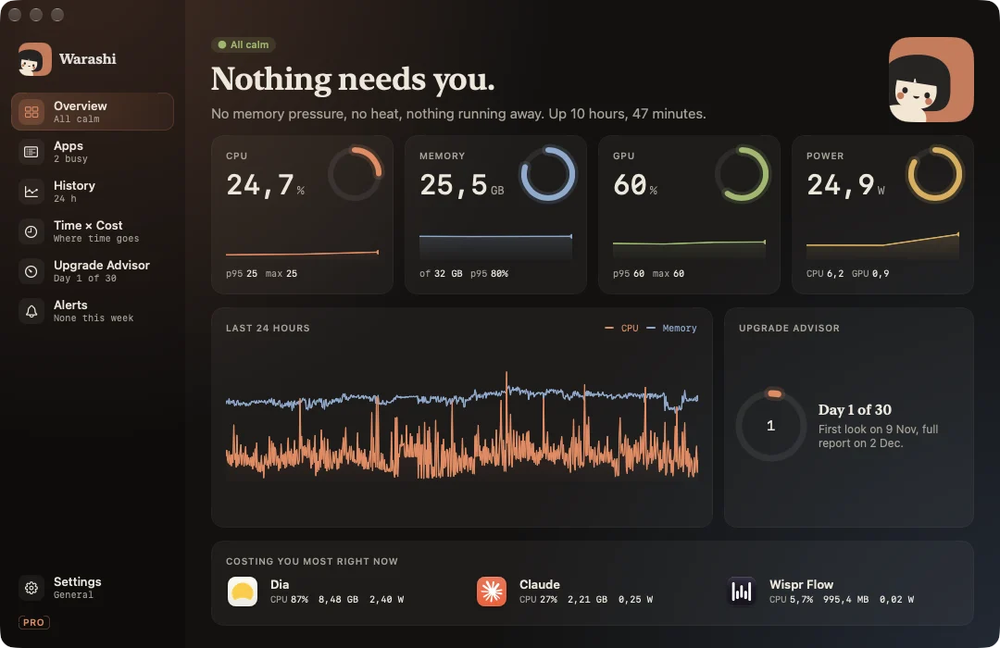
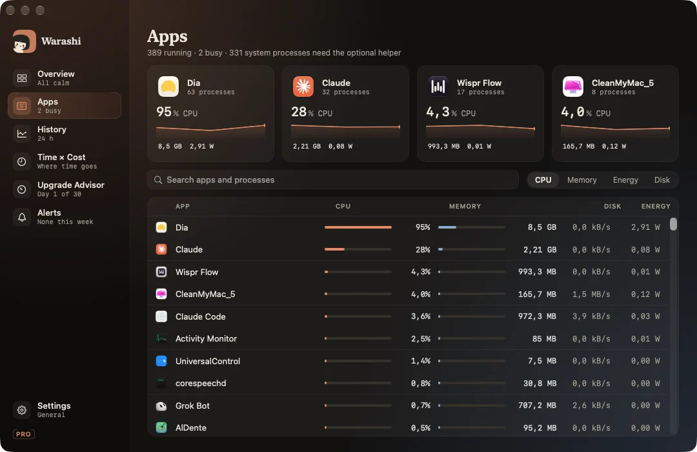
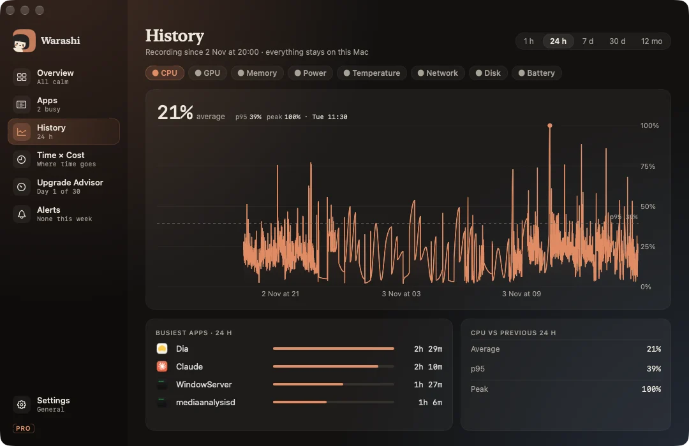

Open the window from the popover (⌘O) or by clicking the notch. It always opens centred on the screen you're using, at one size designed for it.
Overview ⌘1
How your Mac is right now: a headline in words (“Nothing needs you.”, “Memory is getting tight.”), four live instruments for CPU, memory, GPU and power with the 95th percentile and peak, the last 24 hours, the Upgrade Advisor's countdown, and the three apps costing most right now.

Apps ⌘2
The four busiest apps as cards with their last minute, then every running app with CPU, memory, disk and energy. Helpers are grouped under their app. Search by app or process name and sort by CPU, memory, energy or disk.
Click an app to open its drawer: each process with its CPU and memory, and with Warashi Pro, how a process was started (command line, parent, user, start time), its launch job, and who signed the app (Apple, a developer team or ad hoc), hardened runtime and sandboxing.

History ⌘3
One large chart for the metric you pick (CPU, GPU, memory, power, temperature, network, disk or battery) over 1 hour, 24 hours, 7 days, 30 days or 12 months. Hover to scrub: the headline becomes the value at that moment. Below it, the busiest apps for the range and how this range compares with the one before.

How much history is kept
| Detail | Kept for |
|---|---|
| Every 5 seconds | 24 hours |
| Every minute | 30 days |
| Every hour | 12 months |
Free shows the last 30 days; Warashi Pro shows the whole year. Warashi records the same either way.